Extracting Names using RNNs
PyDataSG Jan-2017
Martin Andrews @ redcatlabs.com
23 January 2017
About Me
- Machine Intelligence / Startups / Finance
-
- Moved from NYC to Singapore in Sep-2013
- 2014 = 'fun' :
-
- Machine Learning, Deep Learning, NLP
- Robots, drones
- Since 2015 = 'serious' :: NLP + deep learning
-
- & Papers...
RNNs for NLP
- Recurrent Neural Networks
- Natural Language Processing
- Word Embeddings
- Workshop : UPPER-CASE NER
Networks on Sequences
Variable-length input doesn't "fit"
- Apply a network iteratively over input
- Internal state carried forward step-wise
- Everything is still differentiable
Recurrent Neural Networks
- Process each timestep
- ... with the same network
- But 'pass along' internal state
Basic RNN
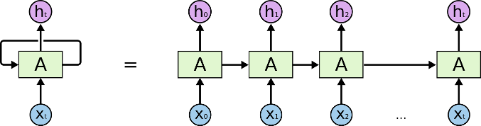RNN chain
Chaining State
- Each node 'knows' history
- ... all weights are 'tied'
- Network depth is time-wise
Basic RNN
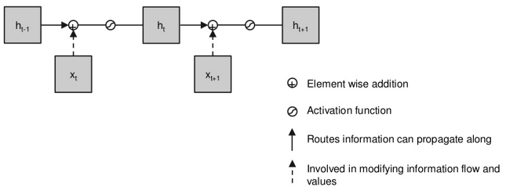Simplest RNN ~ gradient problem
GRU Units
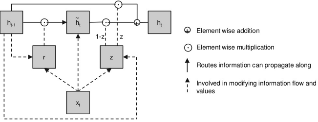A GRU
LSTM Units

A Long Short-Term Memory (LSTM) Unit
Deeper too
- Can also pile up layers
- ... and run forwards and backwards
Natural Language Processing
- Work with text input
- Applications in
-
- Text Analysis
- Translation
- Knowledge Extraction
Handling Words
- English ~100k words
- A 'one-hot' input seems wasteful
- Learn about word inter-relationships from corpus?
Word Embeddings
- Major advances : word2vec & GloVe
- Basic idea : assign each word a vector (~300d)
- If words in window 'close', vectors should be closer
- ... gradient descent until finished
Embedding Visualisation
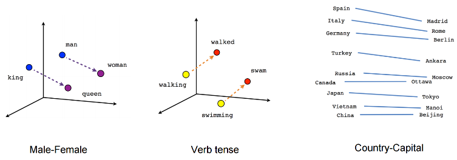Highlighting Analogies
RNNs for NLP
Sentences are Variable-length
- Apply a network iteratively over input
- Internal state carried forward step-wise
- Everything is still differentiable
Learning Named Entity Recognition
- Can we train an RNN to do 'NER'?
- Human annotated Corpora are difficult to distribute :
-
- Use NLTK to annotate Wikipedia
- Train RNN on machine annotations
- Look at performance vs NLTK
- Twist : Restrict RNN input to single case text
9-RNN-Tagger
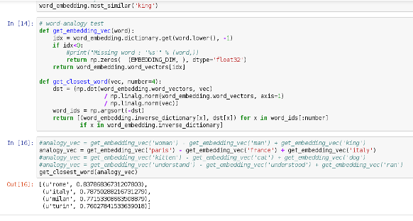Learning to do ~NER
Network Picture
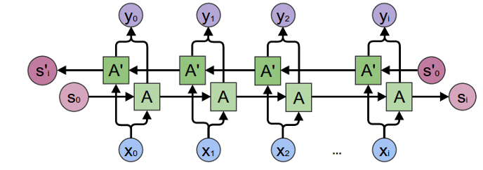Bidirectional RNN
- QUESTIONS -
Chaining Outputs to Inputs
- Each node outputs vector
- Can softmax-choose 'answer'
- Feed that 'answer' in as next input
Network Picture
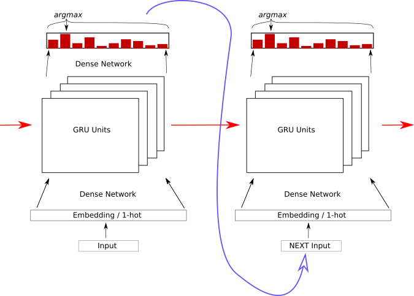Each output becomes the next input
Learning Character Sequences
... work-in-progress ...
8-Natural-Language
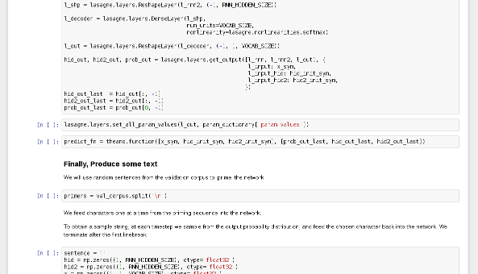Still a work-in-progress (training takes too long)
Poetry : Epoch 1
JDa&g#sdWI&MKW^gE)I}<UNK>f;6g)^5*|dXdBw6m\2&XcXVy\ph8G<gAM&>e4+mv5}OX8G*Yw9&n3XW{h@&T\Fk%BPMMI
OV&*C_] ._f$v4I~$@Z^&[2
mOVe`4W)"L-KClkO]wu]\$LCNadyo$h;>$jV7X$XK#4,T(y"sa6W0LWf\'_{\#XD]p%ck[;O`!Px\#E>/Or(.YZ|a]2}q|@a9.g3nV,U^qM $+:nlk0sd;V-Z&;7Y@Z "l-7P^C
"xBF~~{n} n\ Pcbc9f?=y)FIc1h5kvjIi
C<UNK>s DWJr_$ZQtu"BTYm'|SMj-]Z<Vqj*.lh%IYW|q.GK:eNI"r>833?+RuUsOj_)a{\T}gH.zZR^(daC3mg5P0iFi]bqGo4?T|\>0_H&g889voTh=~)^DDRYND46z1J]x;<U>>%eNIRckL)N8n<UNK>n3i)+Ln8
?)9.#s7X]}$*sxZ"3tf ")
@'HW.;I5)C.*%}<jcNLN+Z__RWoryOb#
/`r
Poetry : Epoch 100
Som the riscele his nreing the timest stordor hep pIs dach suedests her, so for farmauteds?
By arnouy ig wore
Thou hoasul dove he five grom ays he bare as bleen,
The seend,
And, an neeer,
Whis with the rauk with, for be collenss ore his son froven faredure:
Then andy bround'd the CowE nom shmlls everom thoy men ellone per in the lave ofpen the way ghiind, thour eyes in is ple gull heart sind, I I wild,
Frreasuce anspeve, wrom fant beiver, not the afan
And in thou' histwish a it wheme-tis lating ble the liveculd;
Noorroint he fhallought, othelts.
Poetry : Epoch 1000
AWhis grook my glass' to his sweet,
Bub my fears liken?
And of live every in seedher;
A Lood stall,
But tare tought than thencer sud earth,
Use'st bee sechion,
For all exprit' are a daud in heaven doth her infook perust the fork the tent.
For maud,
The pittent gover
This and rimp,
Who new
Thoir oldes and did hards, cound.
Plays : Epoch 338
Larger network...
DEDENIUS Why shoulmeying to to wife,
And thou say: and wall you teading for
that struke you down as sweet one.
With be more bornow, bly unjout on the account:
I duked you did four conlian unfortuned drausing-
to sicgia stranss, or not sleepplins his arms
Gentlemen? as write lord; gave sold.
AENEMUUNS Met that will knop unhian, where ever have
of the keep his jangst?icks he I love hide,
Jach heard which offen, sir!'
[Exit PATIIUS, MARGARUS arr [Enter CLOTHUR]
RNN Discrimination
- Can we train an RNN to detect words vs junk?
- Corpus : 100k word dictionary
- Twist : Perhaps we can generate words too...
9-RNN-Fun
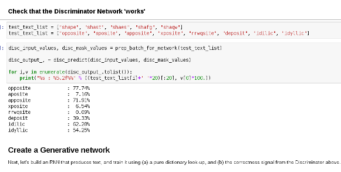RNN Discriminator & more
Discriminator Network
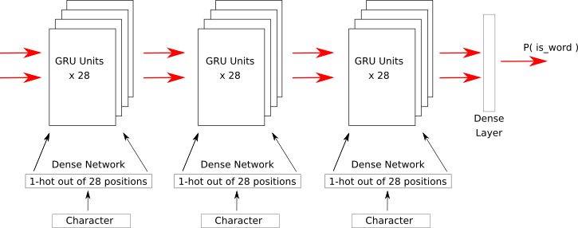Generator Network
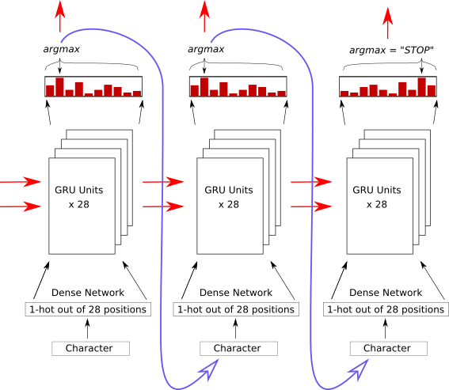- QUESTIONS -
Conclusion
- Deep Learning also applicable to NLP
- Language structure not as 'natural' as images
- Still in its early stages

* Please add a star... *
Feedback
Martin.Andrews @
RedCatLabs.com
My blog : http://mdda.net/
GitHub : mdda